Quick Start Guide
VisionAI is an enterprise-grade computer vision platform that transforms your existing camera infrastructure into an intelligent workplace safety system. This guide will walk you through the setup process and help you get started with your first safety monitoring deployment.
Sign In
Create your enterprise account and set up team access
2 videocamCameras
Connect your existing camera infrastructure
3 memoryAI Scenarios
Select and customize safety monitoring scenarios
4 view_agendaEvents
Select and customize safety monitoring scenarios
Dashboard
Monitor safety metrics and trends in real-time
6 speed_cameraViews
Create custom dashboards for specific monitoring needs
7 list_alt_checkTasks
Create corrective actions and track their completion
8 confirmation_numberTickets
Escalate issues into tracked support requests
Recordings
Capture full-length video evidence from cameras
10 webhookIntegrations
Connect webhooks to push real-time events to external systems
11 speakerSpeakers
Configure on-site audio alerts for immediate response
12 notifications_activeNotifications
Set up alerts and digest emails for your team
Reports
Generate AI-powered and custom safety reports
14 query_statsSafety Intelligence
Multi-site analytics and advanced insights
Prerequisites
- Active enterprise subscription or trial account. Contact Sales.
- Access to your organization's CCTV/camera infrastructure.
- RTSP URLs for your cameras. You can test RTSP URLs using VLC Player.
Step 1: Sign In
Getting started with VisionAI is simple. Here's how to activate your enterprise account:
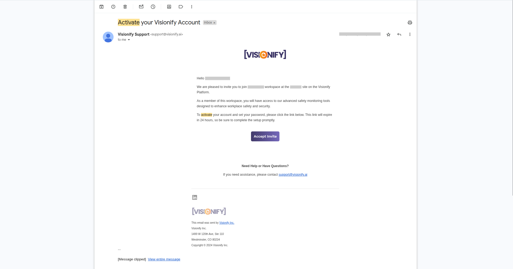
1. Activate Your Account
Once you've signed up for enterprise account, you will receive an activation email from Visionify team.
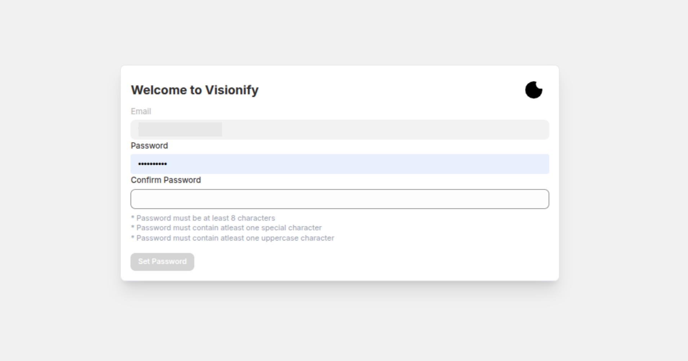
2. Password Setup
Accept the invite from email & activate the account. Set your own password here.
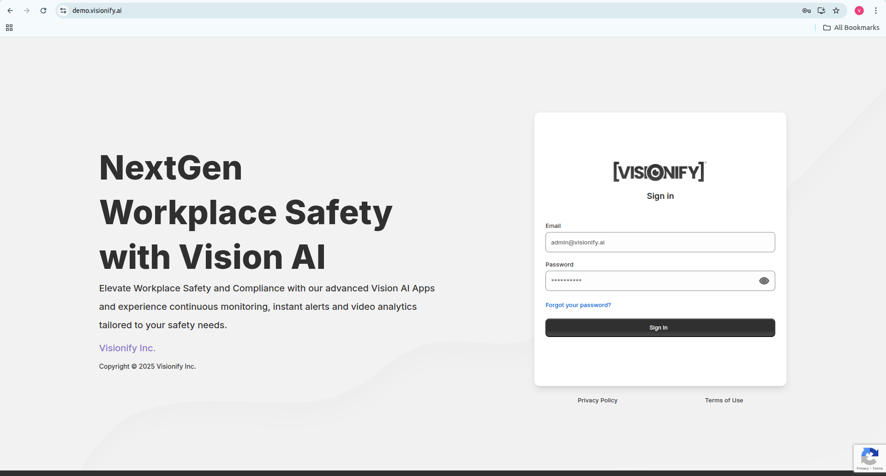
3. Sign In
After successfully setting up your password, you should be able to log in to the Visionify dashboard using your username and password.
Step 2: Camera Onboarding
Connecting your cameras to VisionAI is straightforward. Follow these steps to integrate your existing camera infrastructure:
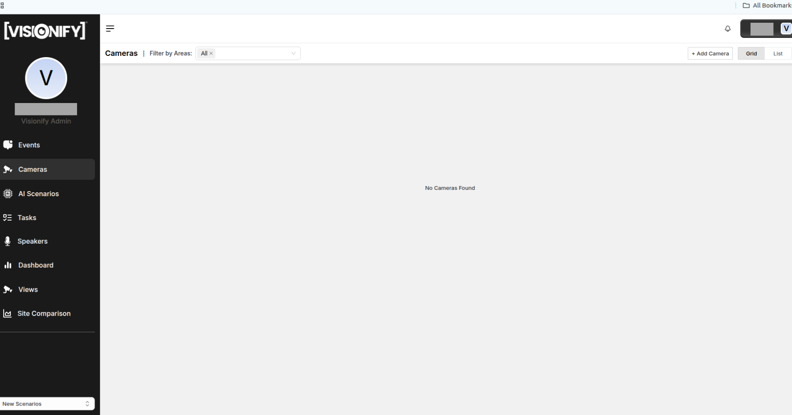
1. Go to Cameras Page
Navigate to the Cameras page from the main dashboard. Click on the "Add Camera" button to begin the integration process. VisionAI supports IP cameras, CCTV systems, and NVR/DVR setups.
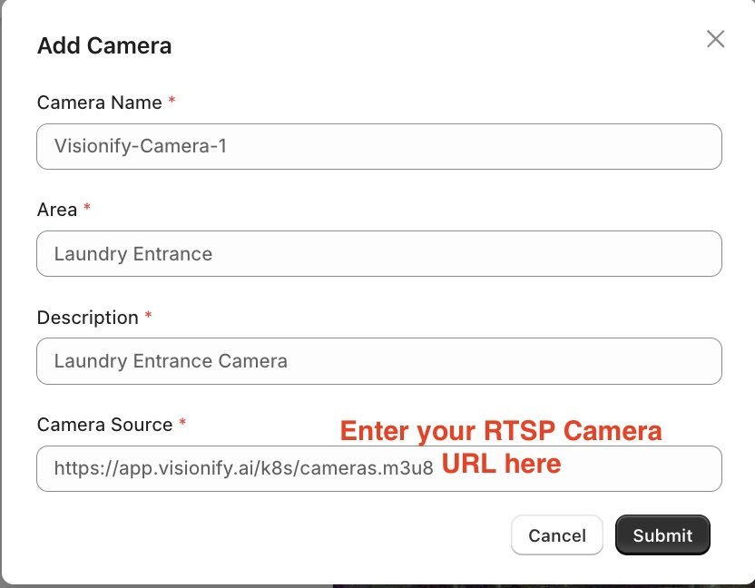
2. Add New Camera Details
Enter your camera details including name, RTSP URL, and location. Test the connection to ensure proper setup before saving.
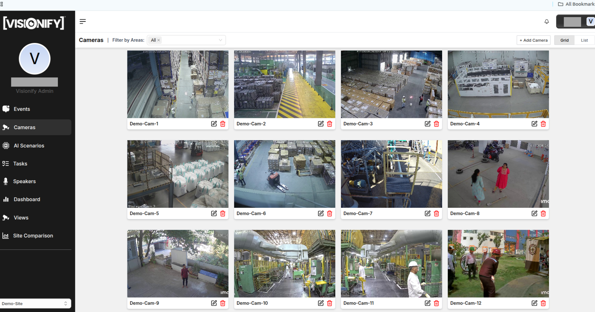
3. Cameras List
Here you'll see all your connected cameras along with their current status. Use the available filters on the Cameras page to view cameras by area.
Note
- Test your Camera RTSP URL to make sure it is playing. You can test it using VLC Player.
- Initially, you will see a blank screen for camera. The screenshot for the camera will update once the camera is connected.
Step 3: Configuring AI Scenarios
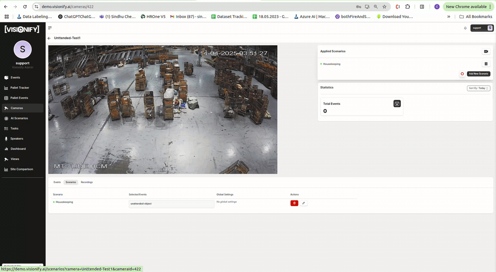
Initiate Scenario Setup
Click "Add New Scenario" on camera details page to begin configuration.
Select a Scenario
Choose from available safety scenarios by clicking "Get This" button.
Set Up Monitoring Zones
Draw and adjust monitoring zones directly on camera feed.
Configure Pause Times
Set break periods to pause detection during scheduled downtimes.
Fine-tune Settings
Adjust confidence thresholds and duration, then click "Apply".
Tip
Start with the default parameters and adjust them later based on the specific needs of your environment. These settings can always be modified at any time.
Step 4: Events
The Events page is your primary feed of detected safety incidents. Each event includes a short video clip, metadata, and AI-generated analysis to help your team review and act quickly.
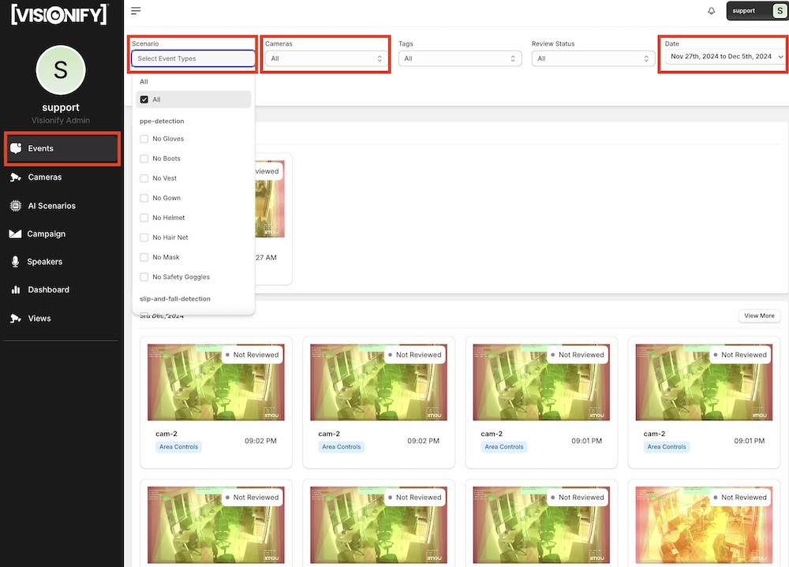
1. Events Listing
Navigate to Events in the left sidebar to review safety incidents. Filter by time range, scenario, camera, area, or shift. Each event card shows the scenario type, camera name, timestamp, severity badge (Low, Moderate, High), and a thumbnail. Click any event to open the details view.
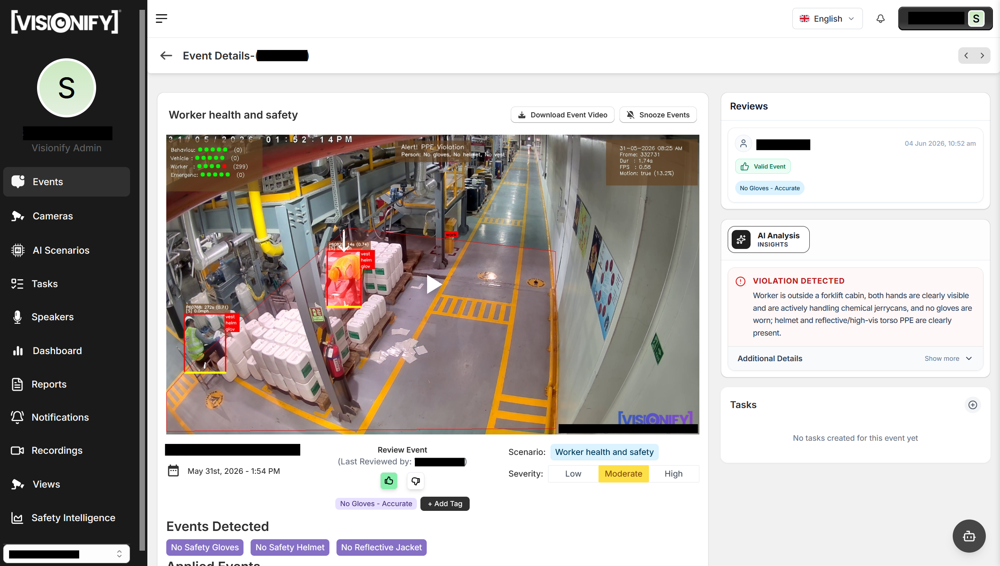
2. Event Details
The Event Details page shows a 12-second video clip of the incident. Use the thumbs up/down buttons to vote, mark it accurate or inaccurate, and leave a written review. Severity level is shown alongside camera name, scenario, and timestamp. From here you can also create a Task or Ticket directly linked to this event.
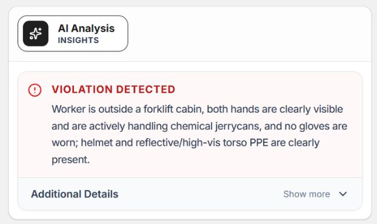
3. AI Analysis Card
Next to the video player, the AI Analysis card shows an automated assessment of the event with observations and findings. Use this to quickly understand whether an event warrants follow-up action.
Tip
Use the AI Analysis card as a first triage layer—if the AI flags a violation with a clear reason, escalate immediately. For borderline events, review the observations before marking accurate or inaccurate.
Step 5: Dashboard
The VisionAI Dashboard provides comprehensive insights into your safety metrics and events. Here's how to navigate and utilize the dashboard effectively:
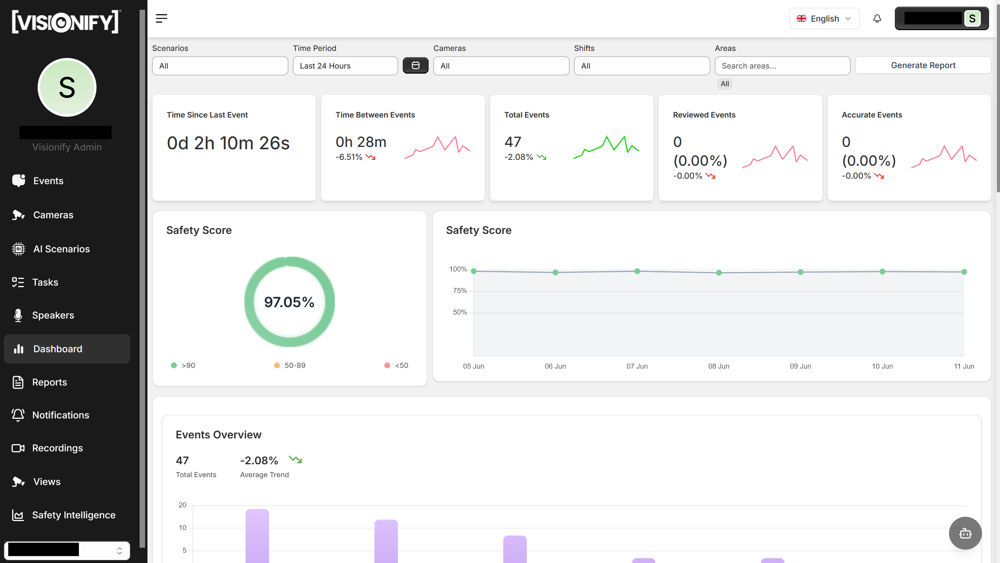
Safety Metrics Overview
View key metrics including Total Events, Reviewed Events, Accurate Events, Time Since Last Event, and Time Between Events. Select custom time ranges to analyze trends across weeks, months, or specific date ranges. Use filters for scenarios, cameras, shifts, and areas to focus on what matters most.
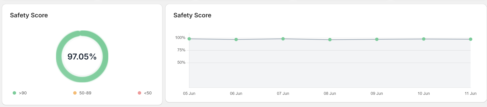
Safety Score
The Safety Score chart shows your overall safety rating as a radial gauge, color-coded by performance: green (>90), orange (50–89), and red (<50). A 7-day trend line tracks whether performance is improving or regressing over the week.
Tip
Monitor the Safety Score trend daily to catch regressions early. Use the area and camera filters to drill into specific locations when the score dips—this helps surface recurring incidents faster.
Step 6: Views
The Views feature provides customized dashboards for specific cameras, areas, or events, enabling quick access to incident insights and performance metrics. Views now include a Share feature that generates a shareable link for any view, with granular control over display preferences and camera groupings.
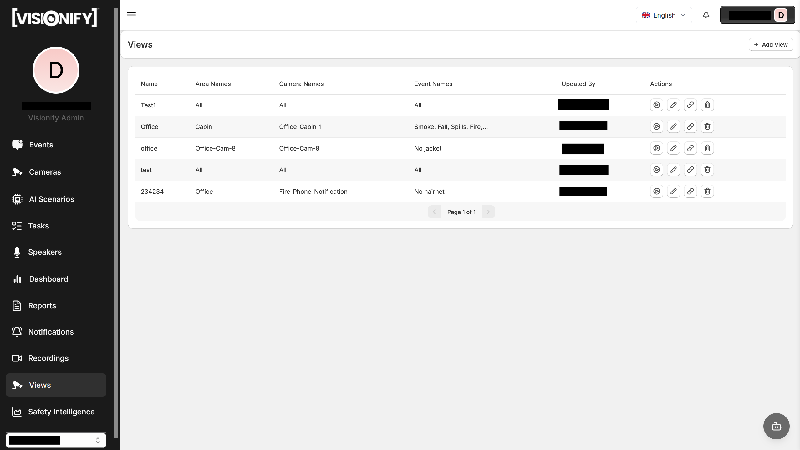
1. Views Overview
Navigate to Views from the left sidebar to see all saved views. Each view card shows the cameras, areas, and events it monitors. Use Play to open the live view, Edit to modify it, or Delete to remove it.
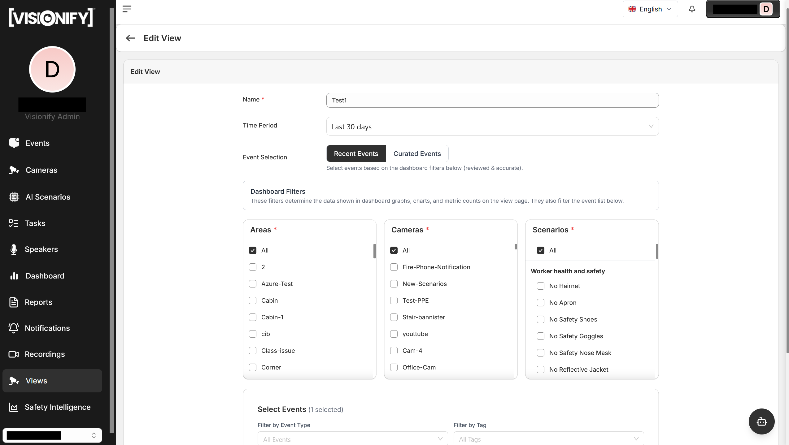
2. Configure Settings
Open the Settings panel inside any view to configure camera groupings, event filters, display layout, and refresh intervals. Settings are saved per view for a tailored monitoring experience.
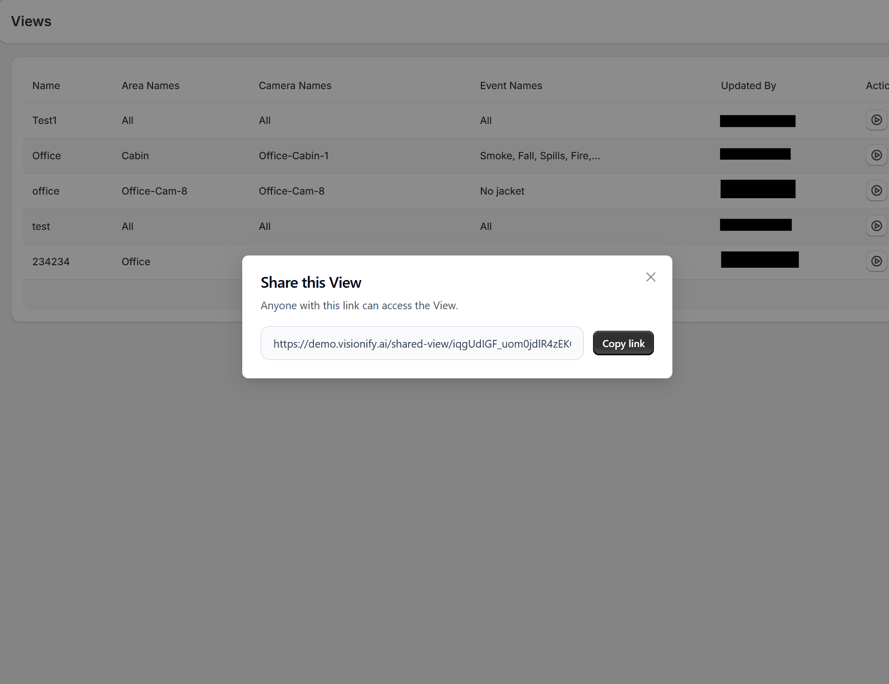
3. Share a View
Click the Share button on any view to generate a unique, shareable link. Recipients can access the view without logging in, making it easy to share with other people.
Step 7: Tasks
Task Management in VisionAI lets you create corrective actions directly from safety events, assign them to team members, and track resolution through to closure with documented proof.
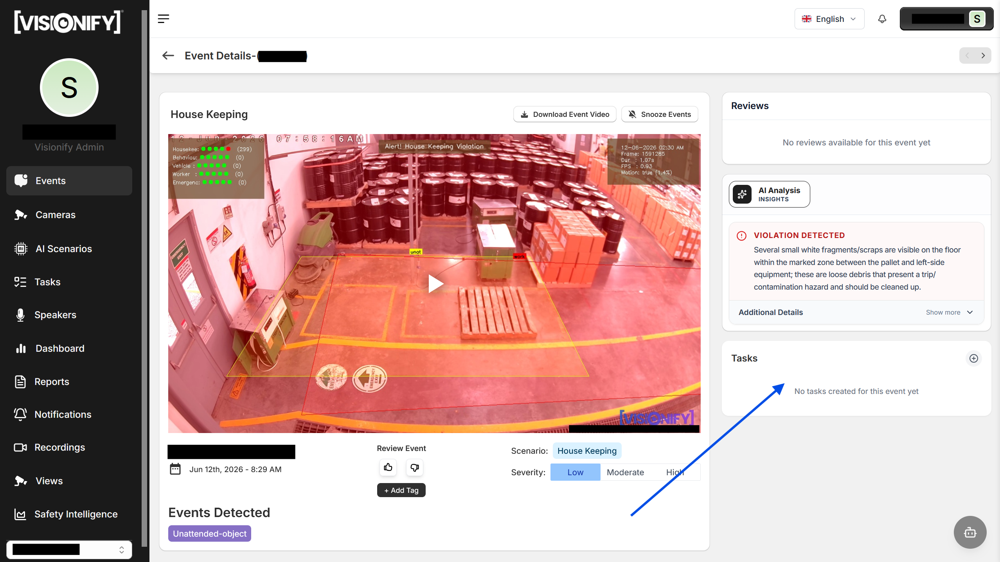
1. Create a Task
From any Event Details page, click Create Task to open the task form. Fill in the task name, set the priority (Critical, Moderate, Low), and assign it to a team member. The task is automatically linked to the source event so the assignee has full context.
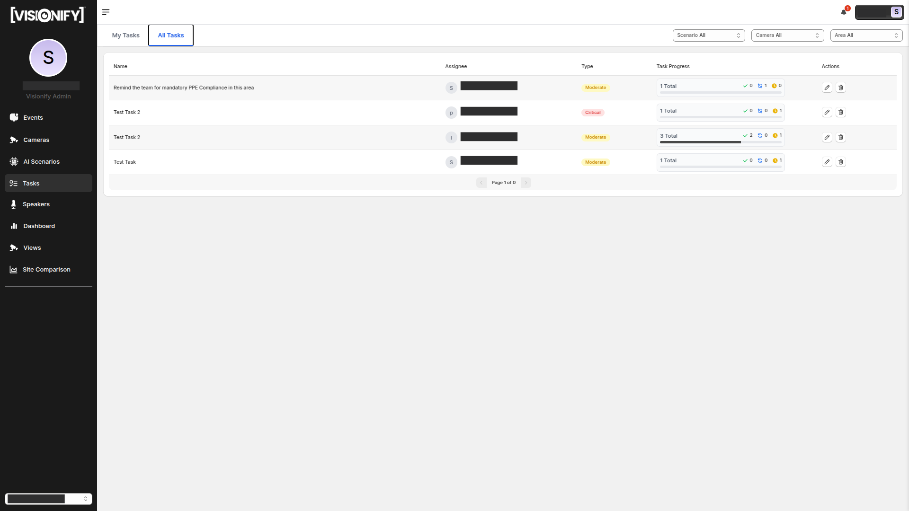
2. Track Tasks
Navigate to Tasks in the left sidebar. Switch between My Tasks (your assignments) and All Tasks (team-wide view). Filter the list by scenario, camera, or area. Each row shows the task name, assignee, assigned-by, priority badge, and current status: TODO, IN PROGRESS, or DONE.
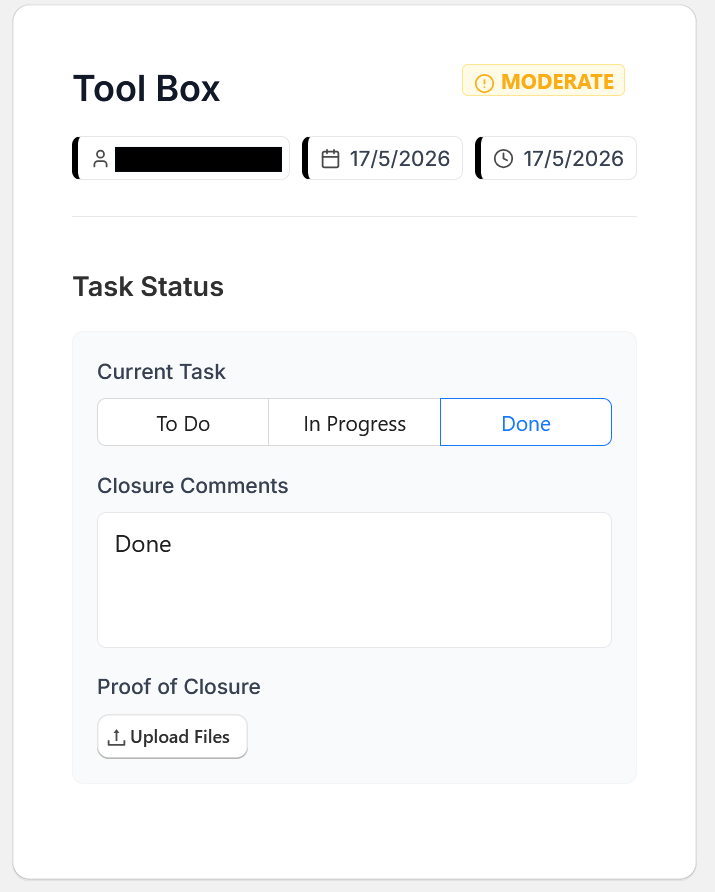
3. Update and Close a Task
Click any task to open its details page. Use the status radio buttons to move it through the workflow. When closing a task, add closure comments explaining the corrective action taken and upload a proof file (photo, document, or video). The timeline at the bottom tracks every status change and finding update in chronological order.
Tip
Link tasks to specific events when creating them so the assignee can watch the video clip and understand the exact incident—this cuts resolution time significantly compared to describing the issue in text.
Step 8: Tickets
Tickets let you escalate specific safety events or camera issues into tracked support items. They can be created from three places—the Event Details page, the Camera Details page, or directly from the Tickets page itself.
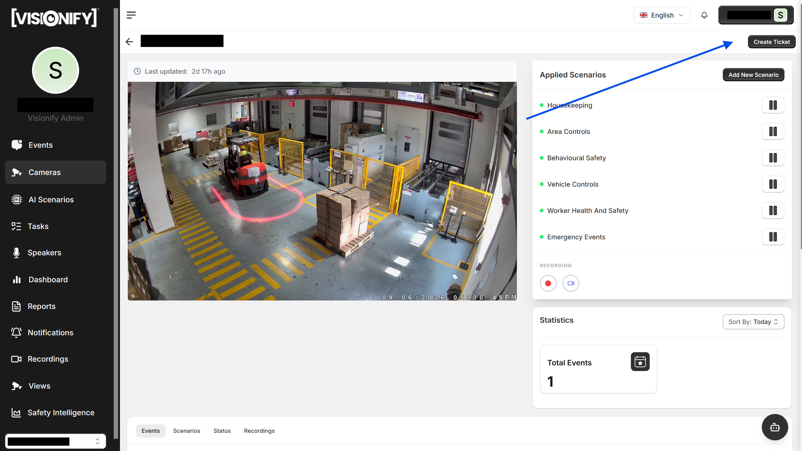
1. Create a Ticket
On an Event Details or Camera Details page, click Create Ticket to open the ticket modal. You can also open the modal from the Tickets page itself via the Create Ticket button in the top-right corner. The ticket is automatically linked to the source event or camera so responders have full context.
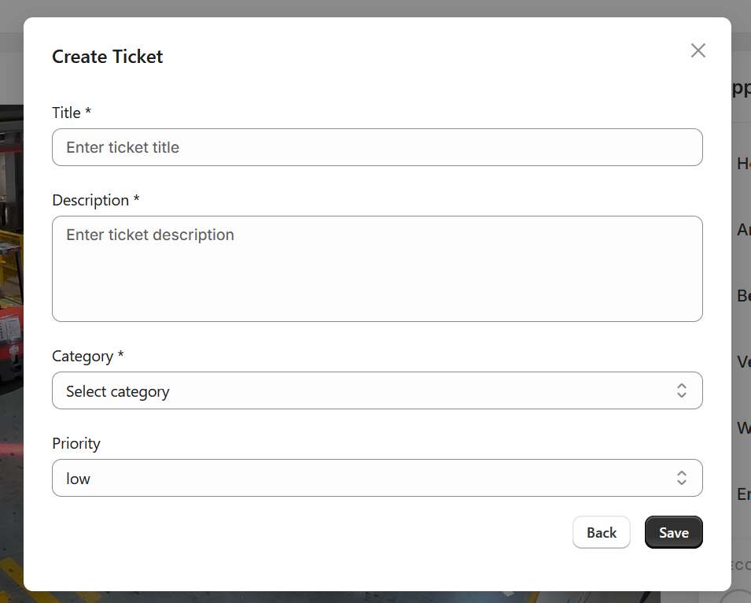
2. Fill in Ticket Details
In the modal, fill in the required fields:
- Title — a short, descriptive name for the issue
- Description — a detailed explanation of what happened and why it needs attention
- Category — the type of issue (options depend on your role)
- Priority — Low, Medium, or High
Click Submit to create the ticket. The creator and timestamp are captured automatically.
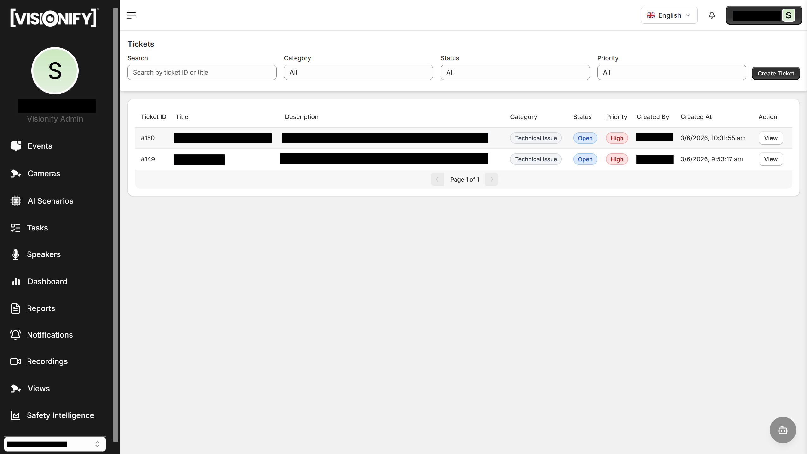
3. Track Ticket Status
Navigate to Tickets under the profiles tab to see all tickets. Filter by category, status, or priority, or search by title. Each row shows the ticket ID, title, category, status, priority, creator, and creation date. Tickets move through four statuses: Open → In Progress → Closed (or Rejected). Click View to open a ticket and see the full timeline of status changes, assignee history, and resolution comments.
Tip
Use High-priority tickets for safety violations that need same-day resolution. Link them to the specific event so the responder can watch the video clip directly from the ticket detail page.
Step 9: Recordings
Recordings let you capture full-length video from any camera on demand. Start and stop recordings directly from the Camera Details page; all clips are then available on the Recordings page for playback, review, and deletion.
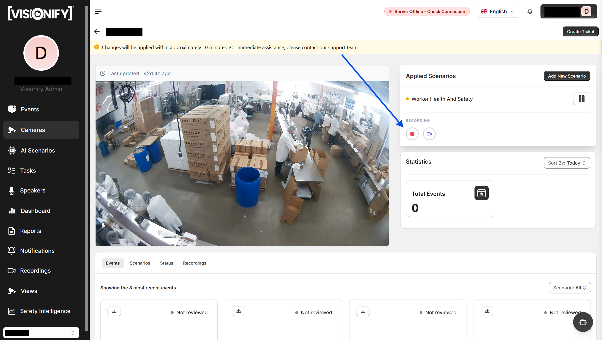
1. Start a Recording
Open any camera's Camera Details page and scroll to the Recording section below the applied scenarios. Click the red record button to start capturing. The button turns solid red while recording is active. Click it again to stop. A pulsing indicator confirms the recording is live.
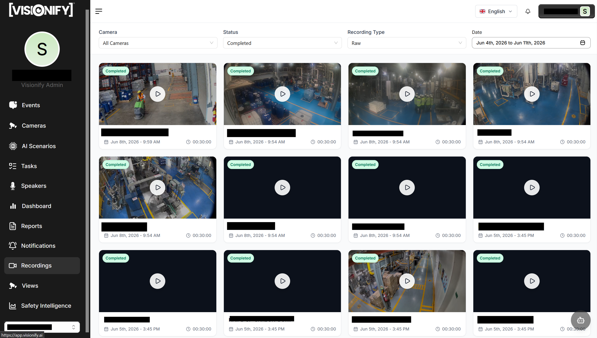
2. Browse Recordings
Navigate to Recordings in the left sidebar to see all clips in a grid layout. Filter by camera, status (Completed, In Progress, Started, Stopped), and date range. Each card shows a thumbnail, start time, and duration. Clips are sorted newest first.
Step 10: Integrations
Integrations let VisionAI push real-time event notifications to external systems the moment a safety event is detected. Once an integration is saved, it becomes selectable when creating an instant alert under Notifications. Currently, three webhook subtypes are supported. For requirements beyond these, please reach out to the VisionAI team for assistance.
| Subtype | Format |
|---|---|
| Generic Webhook | application/json |
| MS Teams Webhook | application/json |
| Synology Webhook | application/x-www-form-urlencoded |
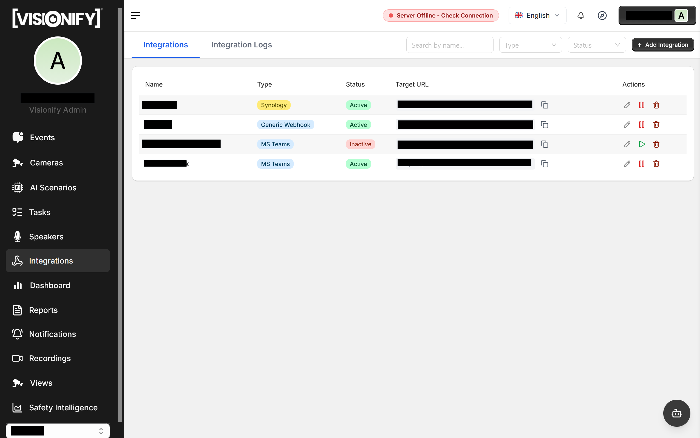
1. Open the Integrations Page
Navigate to Settings → Integrations in the left sidebar. The page lists all configured integrations with their name, type, status, and target URL. Click Add Integration in the top-right corner to begin.
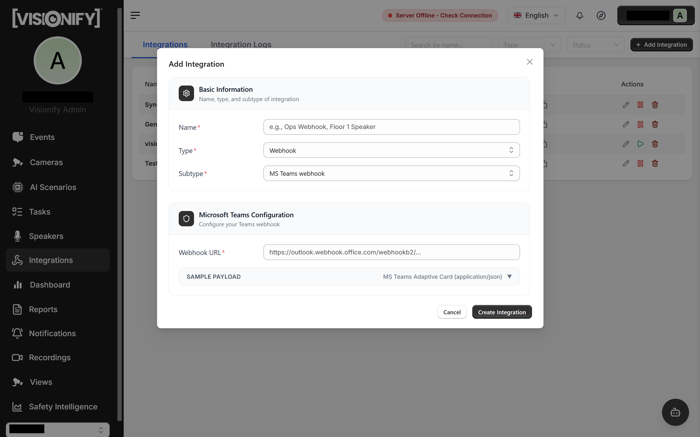
2. Set Name, Type, and Subtype
Fill in a Name, set Type to Webhook, then choose a Subtype: Generic Webhook, MS Teams Webhook, or Synology Webhook.
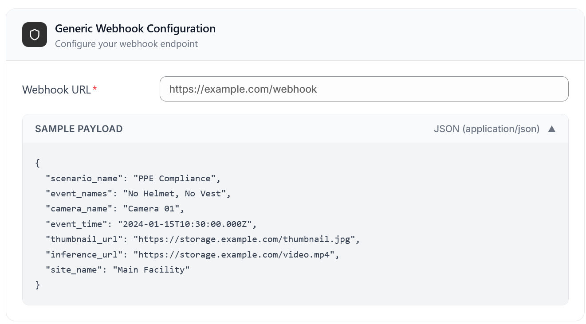
3. Enter the Webhook URL and Save
Paste your destination URL into the Webhook URL field. A Sample Payload toggle below shows the exact body that will be posted so you can verify your endpoint is ready. Click Save to activate the integration.
Getting a Teams Incoming Webhook URL
In Microsoft Teams, open the target channel → ⋯ More options → Connectors → Incoming Webhook → Configure. Copy the generated URL and paste it into the Webhook URL field.
Webhook Payload Reference
VisionAI sends an HTTP POST to your webhook URL each time a matching event fires. The request body format depends on the subtype chosen.
Content-Type: application/json
{
"scenario_name": "PPE Compliance",
"event_names": "No Helmet, No Vest",
"camera_name": "Camera 01",
"event_time": "2024-01-15T10:30:00.000Z",
"thumbnail_url": "https://storage.example.com/thumbnail.jpg",
"inference_url": "https://storage.example.com/video.mp4",
"site_name": "Main Facility"
}
| Field | Type | Description |
|---|---|---|
scenario_name |
string | AI scenario that fired |
event_names |
string | Comma-separated detected events |
camera_name |
string | Camera that captured the event |
event_time |
ISO 8601 | UTC timestamp |
thumbnail_url |
string | Snapshot image URL |
inference_url |
string | Annotated video clip URL |
site_name |
string | Site where the event occurred |
Content-Type: application/json
VisionAI sends a Microsoft Adaptive Card wrapped in the Teams message envelope. The card includes scenario details, camera name, timestamp, a snapshot image, and action buttons linking back to the dashboard.
{
"type": "message",
"attachments": [
{
"contentType": "application/vnd.microsoft.card.adaptive",
"content": {
"type": "AdaptiveCard",
"version": "1.4",
"body": [
{
"type": "Container",
"style": "emphasis",
"items": [{ "type": "TextBlock", "text": "Visionify Detected an Event!", "weight": "Bolder", "size": "Large" }]
},
{
"type": "ColumnSet",
"columns": [
{ "type": "Column", "width": "stretch", "items": [
{ "type": "TextBlock", "text": "**Scenario**", "weight": "Bolder" },
{ "type": "TextBlock", "text": "PPE Compliance" },
{ "type": "TextBlock", "text": "**Events Detected**", "weight": "Bolder" },
{ "type": "TextBlock", "text": "No Helmet, No Vest" }
]},
{ "type": "Column", "width": "stretch", "items": [
{ "type": "TextBlock", "text": "**Camera**", "weight": "Bolder" },
{ "type": "TextBlock", "text": "Camera 01" },
{ "type": "TextBlock", "text": "**Time**", "weight": "Bolder" },
{ "type": "TextBlock", "text": "2024-01-15 10:30 AM" }
]}
]
},
{ "type": "Image", "url": "https://storage.example.com/thumbnail.jpg", "size": "Stretch" }
],
"actions": [
{ "type": "Action.OpenUrl", "title": "View Event Details", "url": "https://app.visionify.ai/..." },
{ "type": "Action.OpenUrl", "title": "Snooze All Events", "url": "https://app.visionify.ai/..." }
]
}
}
]
}
Content-Type: application/x-www-form-urlencoded
Example:
| Field | Description |
|---|---|
token |
Camera-specific token configured on the camera record |
text1 |
Scenario name |
text2 |
URL-encoded, comma-separated event names |
time |
Unix timestamp in seconds |
Using your integration in an alert
Once an integration is saved and active, go to Notifications → Step 12 to create an alert that routes safety events through it. In the Add Alert modal, choose the matching webhook type (Generic, MS Teams, or Synology) and select the named integration from the dropdown that appears. The integration must exist here before it can be selected in Notifications.
Integration Logs
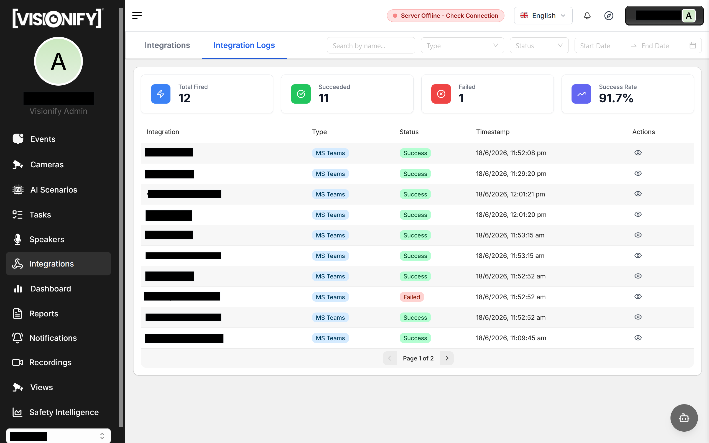
Switch to the Integration Logs tab to inspect every delivery attempt. Each row shows the integration name, subtype, timestamp, HTTP status returned by your endpoint, and whether the delivery succeeded or failed. Use the filters to narrow by type, status, or date range.
Step 11: Speakers
The Speakers page manages your IP-based audio speakers for on-site safety announcements. Configure which cameras and scenarios trigger each speaker and what message to play.
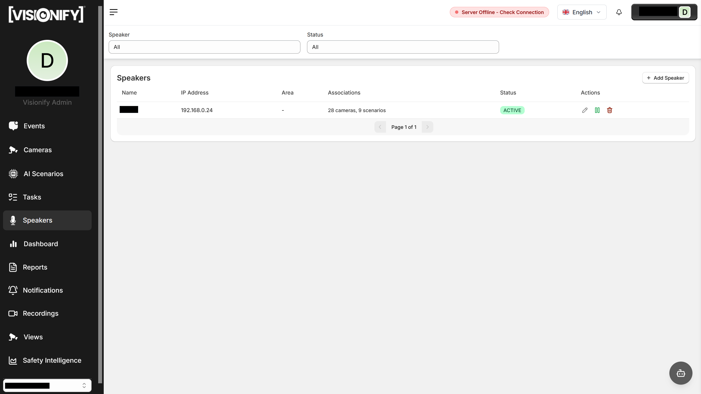
1. Speakers Overview
Navigate to Speakers in the left sidebar to see all configured speakers. Each row shows the speaker name, IP address, area, the number of associated cameras and scenarios, and its status (Active / Inactive). Use the toggle buttons to activate or deactivate a speaker, or click Edit to modify its configuration.
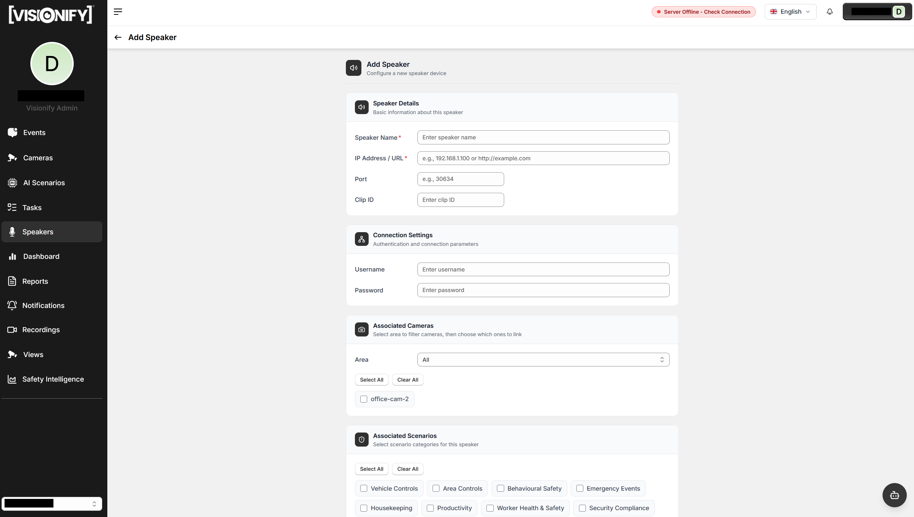
2. Add a Speaker
Click Add Speaker and fill in the speaker details:
- Speaker Name — display label used throughout the app
- IP Address / URL — the speaker's network address (IPv4 or URL format)
- Port — optional, for non-standard ports
- Clip ID — optional, for pre-loaded audio clip selection
- Username / Password — optional, for authenticated speaker endpoints
In the Associated Cameras section, filter by area and check the cameras this speaker should cover. In the Associated Scenarios section, check the scenario types (e.g., PPE violation, area restriction) that should trigger an announcement from this speaker.
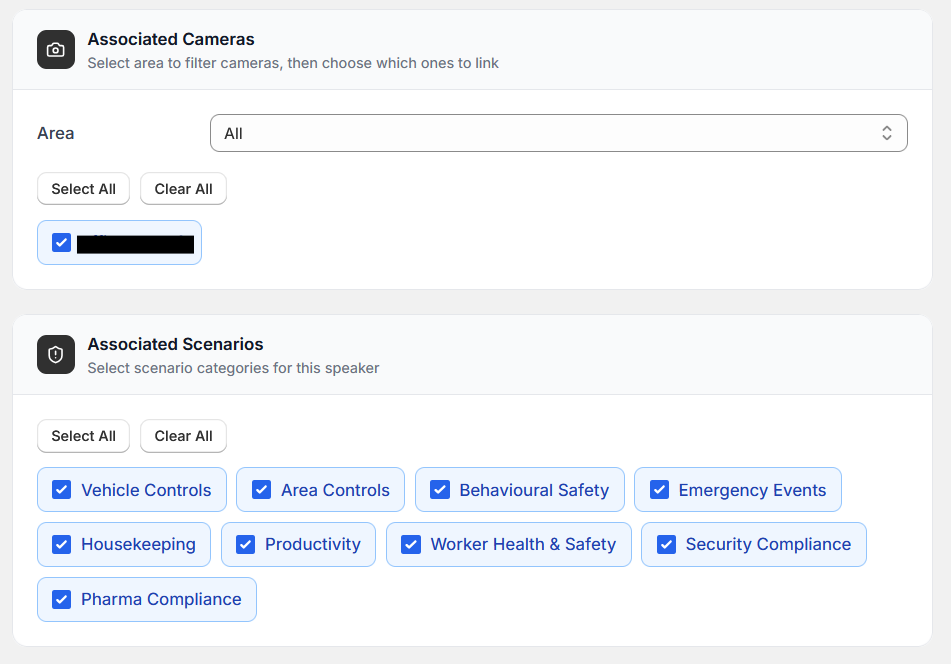
3. Configure Event-Triggered Alerts
After saving the speaker, the system automatically plays an announcement whenever a detection event matches one of the speaker's associated cameras and scenario types. To adjust which events fire the speaker, edit the speaker and update the camera or scenario selections.
Tip
Assign speakers to specific areas rather than all cameras—this ensures the announcement plays only near the incident location and avoids unnecessary disruption in unaffected zones.
Step 12: Notifications
Configure alerts and digests directly from the Notifications page in the sidebar. All alert types are configured through in-app modals, and each alert includes a Test button to verify delivery before going live.
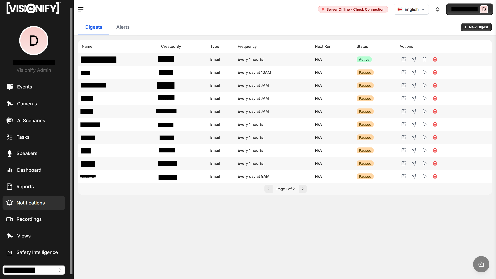
1. Open Notifications
Click Notifications in the left sidebar to access all alert and digest settings in one place. The page lists all configured alerts with their status, schedule, and delivery channels.
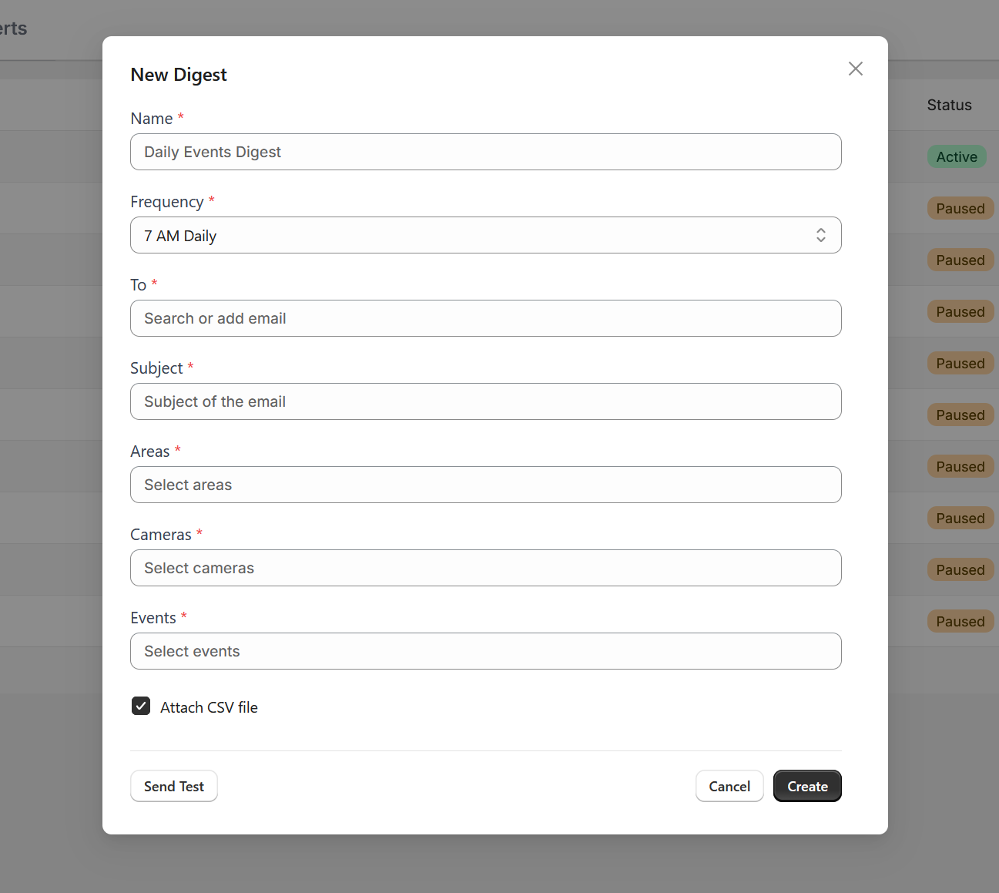
2. Configure Digests
Click Add Digest to open the configuration modal. Set the frequency (daily, weekly), add recipient email addresses, and select which scenarios and areas to include. Digests deliver a safety summary with trend charts and key metrics to a broader audience.
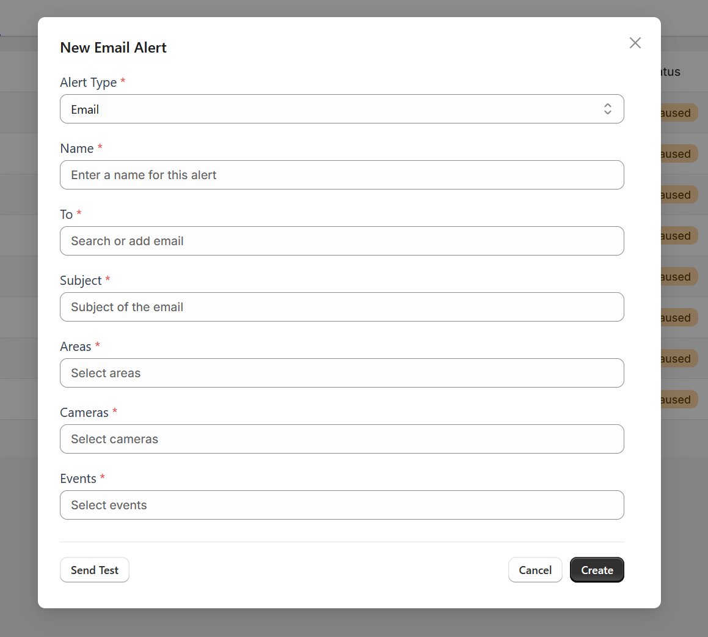
3. Configure Alerts
Click Add Alert to open the alert modal. Choose the alert type—Email, WhatsApp, MS Teams, Generic Webhook, or Synology Webhook.
- Email / WhatsApp — add recipient contacts directly in the modal; no prior integration setup required.
- Webhook types (MS Teams, Generic Webhook, Synology Webhook) — a second dropdown appears listing all active integrations of the matching subtype. You must first create the integration under Settings → Integrations before it appears here. Select the named integration to route this alert to.
Set the event, area, and camera scope for the alert, then click Save. Multiple alert types can be active simultaneously, so you can combine real-time webhook alerts for on-call responders with digest emails for management.
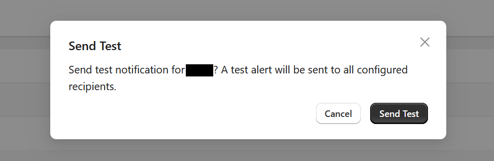
4. Test Your Alerts
Use the Test button next to any configured alert or digest to send a sample notification immediately. This confirms delivery to the right recipients and channels before any real safety event occurs.
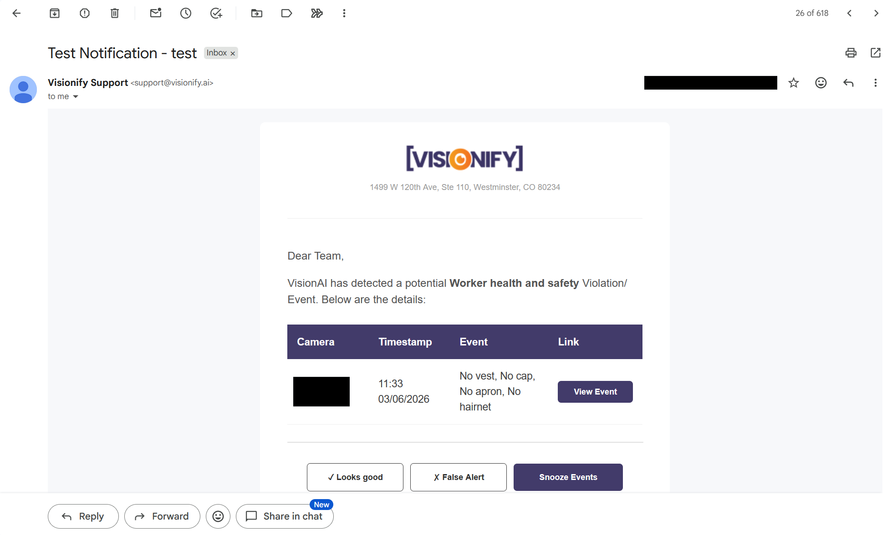
5. Verify Email Delivery
Check the inbox of each recipient email address after the first scheduled digest or after clicking Test. The email shows the VisionAI safety summary with key metrics, event thumbnails, and trend charts. Confirm that formatting renders correctly and that links back to the app are working before the alert goes into production use.
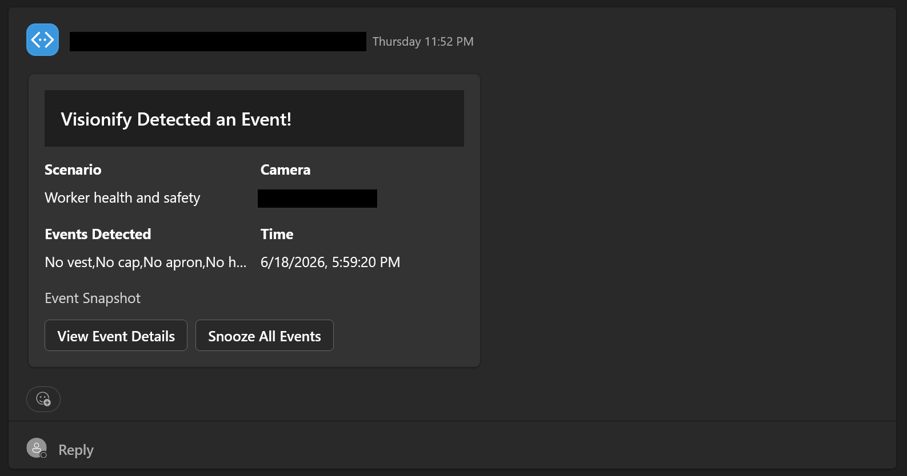
6. Verify Webhook Delivery
After clicking Test on a webhook-type alert, navigate to Settings → Integrations and open the Integration Logs tab. Locate the delivery attempt that matches your test—each row shows the integration name, subtype, timestamp, and the HTTP status code returned by your endpoint.
- 2xx OK — payload was accepted successfully. No further action needed.
- 4xx status — the endpoint rejected the request. Check that the URL is correct and that your receiving service accepts
POSTrequests with the expected content type. - 5xx status or connection error — your endpoint is unreachable or returned a server error. Verify the service is running and the URL is accessible.
Re-test after fixing any issues and confirm the log shows a successful delivery before relying on the alert in production.
Tip
Always use the Test feature after configuring a new alert to confirm end-to-end delivery. For webhook alerts, cross-check the Integration Logs tab to see the exact HTTP response your endpoint returned—this is the fastest way to debug a missed delivery. Combine digest emails for management summaries with real-time webhook or WhatsApp alerts for on-call responders.
Step 13: Reports
The Reports page gives you on-demand safety reports in two modes: AI-generated narrative reports and fully customizable standard reports. AI reports are written by GPT and ready in seconds; standard reports let you build a tailored data export filtered by time, scenario, area, camera, and shift.
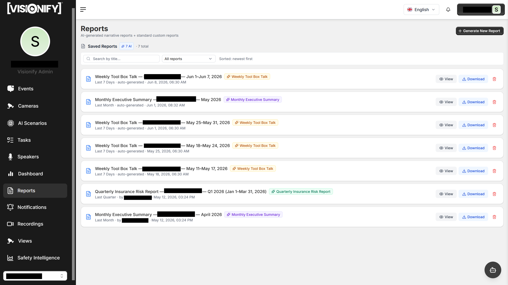
1. Reports Overview
Navigate to Reports in the left sidebar. The page lists all saved reports with their title, type, time range, creator, and creation date. Use the search bar to find a report by name, or filter by type: Standard, AI, Weekly Toolbox Talk, Monthly Executive Summary, Insurance Risk, or Incident Investigation. In-progress reports appear pinned at the top with a live countdown.
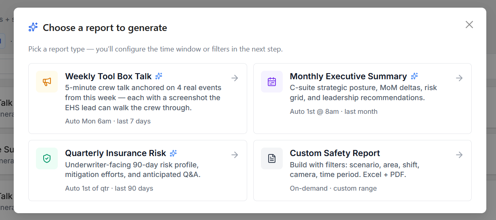
2. Select an AI Report Type
Click Generate New Report from the Reports page. A dialog opens showing all available report types.
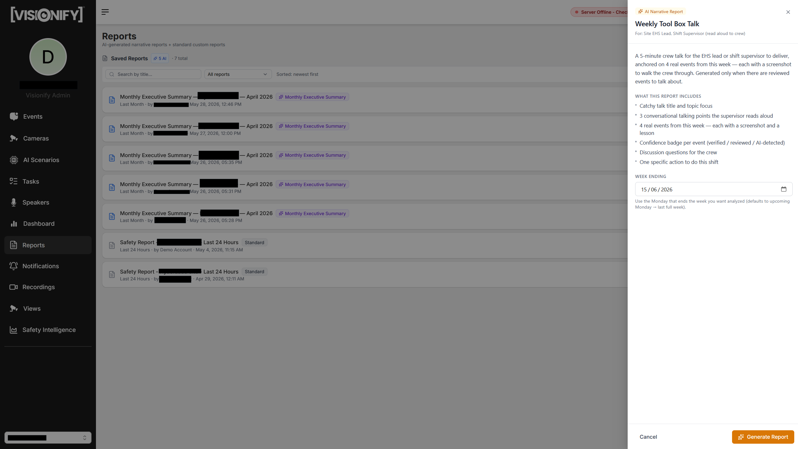
3. Select an AI Report Type
- Weekly Toolbox Talk — 5-minute crew safety talk with real events, screenshots, and discussion questions
- Monthly Executive Summary — C-suite overview with risk posture, month-over-month deltas, and recommendations
- Quarterly Insurance Risk — 90-day underwriter-facing risk profile
- Incident Investigation — First-pass investigation for a single event with 5-Why analysis and root cause
Enter the required date range or event ID, then click Generate. Reports are typically ready in 10–45 seconds.
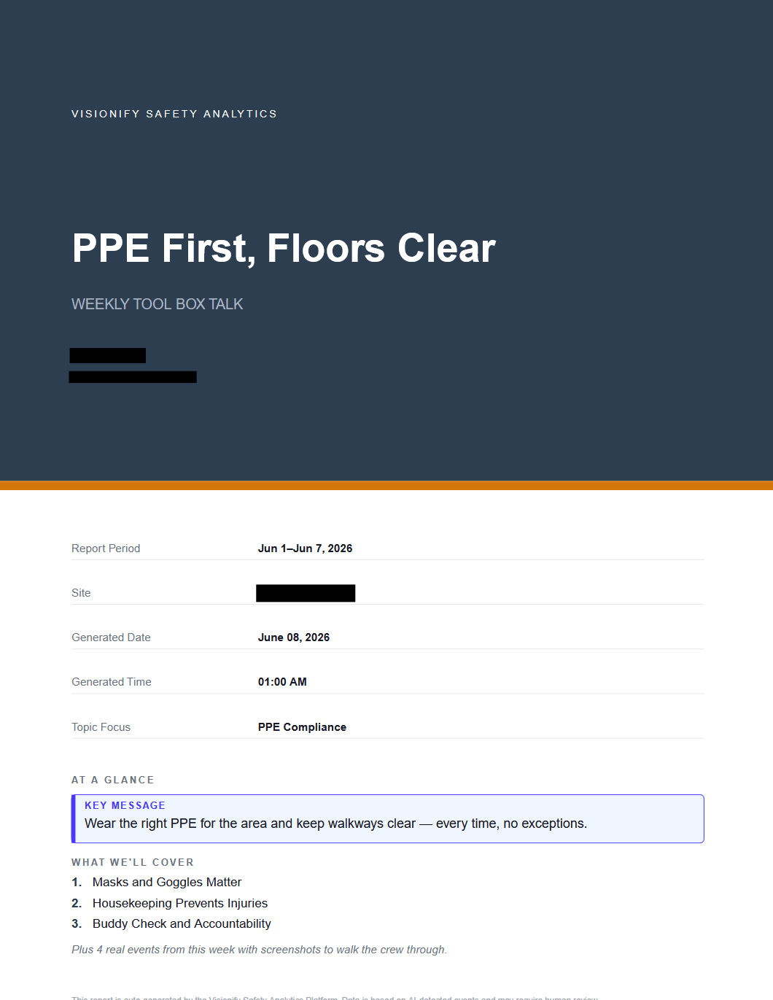
4. Download your Report
Once the report is ready, it can be downloaded as Excel for raw data or PDF for a formatted report. Both formats are saved to the Reports list for future access.
Tip
Use Incident Investigation reports immediately after a high-severity event—enter the event ID and the AI produces a structured first-pass investigation with root cause analysis in under a minute.
Step 14: Safety Intelligence
The Safety Intelligence page is a multi-site analytics hub organized into four tabs. Use the filter bar at the top to choose your site scope—All Sites, Country, Region, or a Custom multi-site selection—and all tabs update together.
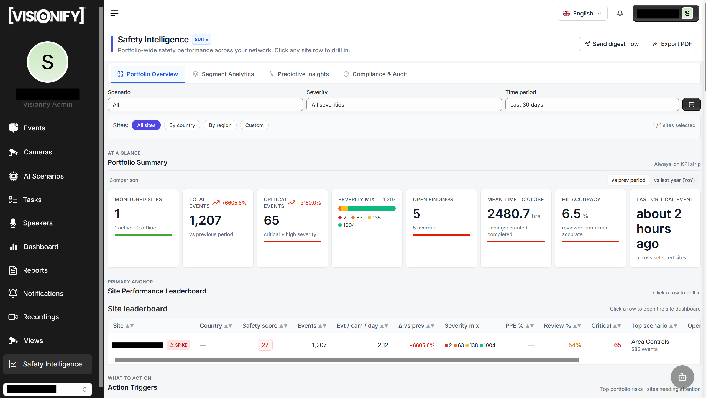
1. Portfolio
The Portfolio tab gives a portfolio-wide view across five panels:
- KPI Strip — headline metrics: portfolio Safety Score, Mean Time To Resolve (MTTR), total events, and reviewed event rate
- Site Performance Leaderboard — all sites ranked by safety score; flagged sites show an "At Risk" badge
- Top Risks — the most-violated scenario types across your portfolio, ranked by event count
- World Map — geographic distribution of sites with color-coded safety status
- Time Heatmap — day × hour grid showing when incidents peak across the week; use this to schedule audits or shift supervisor coverage
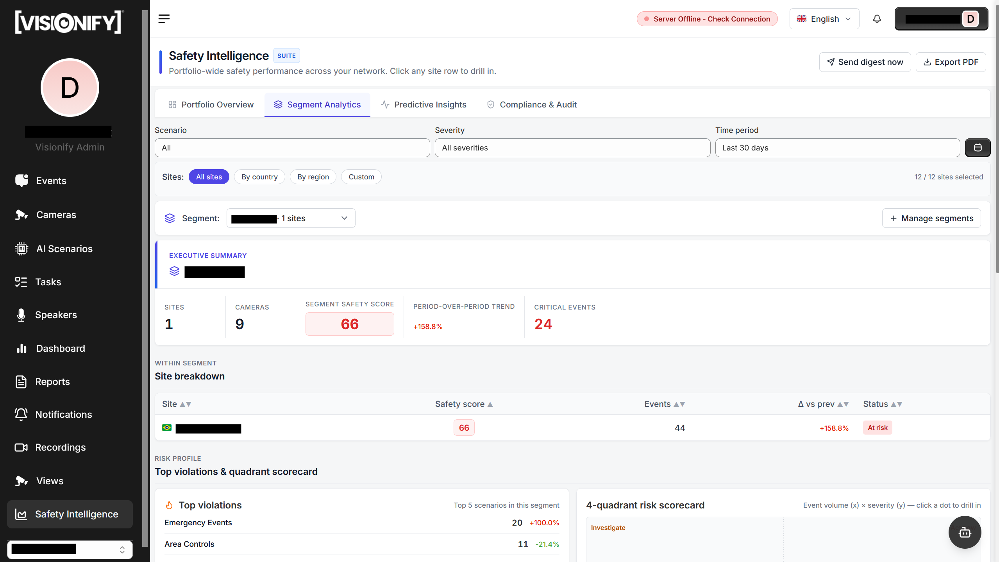
2. Segments
The Segments tab breaks your portfolio down by country, region, or custom grouping. Each segment row shows aggregated safety score, total events, MTTR, and a mini trend sparkline. Use this to compare performance across geographies, business units, or franchisee groups. Clicking a segment row filters the other tabs to that segment's sites.
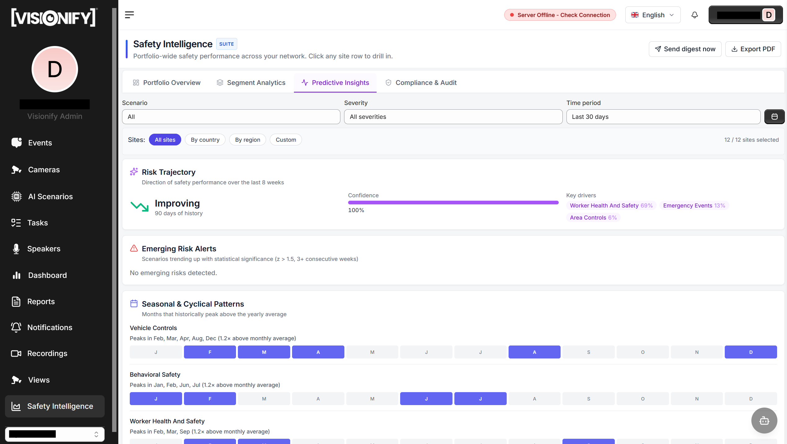
3. Predictive Insights
The Predictive tab uses historical incident patterns to forecast where risk is trending upward. Charts show event-count forecasts per site and scenario for the next 7–30 days. Sites projected to cross a risk threshold are surfaced as early-warning alerts, so safety managers can intervene before an incident spike occurs.
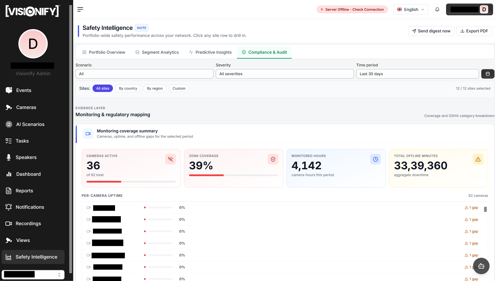
4. Compliance Audit
The Compliance tab scores each site's adherence to safety policies, broken down by scenario (e.g., PPE compliance rate, restricted-area adherence). A Scenario × Site matrix lets you spot which specific combinations are chronically non-compliant. Export the audit table as a report for regulators, insurers, or leadership reviews.
Tip
Start with the Portfolio tab and its Leaderboard to find the lowest-scoring sites. Switch to Segments to check if underperformance is geographic or isolated. Then use Predictive Insights to decide where to deploy additional resources before the next audit cycle.
Contact Information
contact_phone Sales Inquiries
Get in touch with our sales team for demos and pricing information.
- Email: sales@visionify.ai
- Phone: +1 720-449-1124
support_agent Technical Support
Need help? Visit our support portal or contact our technical team.
calendar_month Schedule a Demo
See VisionAI in action with a personalized demo from our team.